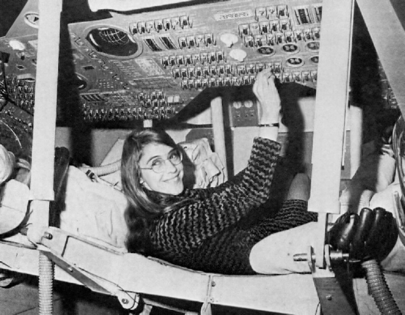

Nació el 17 de agosto de 1936 en Indiana, EE.UU. Fue la ingeniera que desarrolló el software del programa Apolo de la NASA. Su código permitió el alunizaje del Apollo 11 en 1969. Creó sistemas que evitaban fallos catastróficos y priorizaban tareas esenciales, lo que salvó la misión cuando hubo errores de computadora durante el descenso. Lideró el equipo que inventó el concepto moderno de ingeniería de software, término que ella misma acuñó. Es una de las mujeres más influyentes en tecnología. Su disciplina y rigor revolucionaron la forma en que se programa. Recibió la Medalla Presidencial de la Libertad en 2016. Su trabajo permitió que la humanidad llegara a la Luna. Es un modelo mundial de liderazgo técnico. Su legado vive en todos los sistemas críticos modernos.